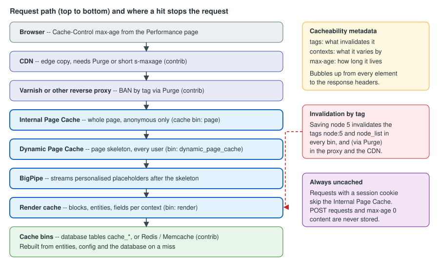

Performance and Caching
|
This content was generated with the assistance of AI and should be verified against the official documentation before being relied on in production. |
A Drupal page is assembled from many parts — a node, its fields, menus, blocks, the current user’s permissions, the language, the theme — and building it from scratch on every request is expensive. Drupal is therefore designed as a layered caching system: each layer stores the result of the work below it, and each stored result carries cacheability metadata that says what it depends on, so that it can be thrown away at exactly the moment it becomes wrong and not before. This page explains the layers, the metadata, the settings screen, the production back ends (Redis, Varnish, a CDN), the PHP-level caches (OPcache, APCu), asset and image optimisation, and how to measure the result, using the Meridian Museum site as the example.
It was written on 2026-10-30 against Drupal 11.4.x (the current minor), Drush 13/14 and PHP 8.3 or later. Drupal 10 reaches
end of life on 2026-12-09, so new sites should not start on it, and Drupal 12.0.0 is scheduled for the week of 2026-12-07;
where either differs, the text says so. The Meridian Museum is a fictitious regional science museum whose module is
meridian_collection, whose theme is meridian and whose recipe is meridian_events. The people who use this page are the
site administrator (the Performance screen, purging, the proxy), the developer (cache metadata in code, custom bins),
the themer (render cache and placeholders in templates) and the operator (Redis, Varnish, OPcache, measurements).
For the code that produces cache metadata see Render API and cache metadata, for the per-environment configuration files see settings.php, services.yml and environments, for the Redis server itself see Redis, for PHP-level tuning see OPcache, JIT and PHP performance, and for scheduled work that warms or purges caches see Cron, queues and maintenance.
The layers at a glance
Between a visitor and the database sit up to seven layers. Not every site uses all of them; the first two on the server side are in core and are enabled by the Standard installation profile, the rest are choices.

| Layer | Where it lives | What it stores | Who benefits |
|---|---|---|---|
Browser |
The visitor’s machine |
Whole responses, as allowed by |
Repeat visitors |
CDN |
The provider’s edge |
Whole responses and static files |
Visitors far from the server |
Reverse proxy (Varnish, nginx, a managed edge) |
In front of the web server |
Whole responses |
Anonymous visitors; takes load off PHP entirely |
Internal Page Cache ( |
Cache bin |
The final response, keyed by URL, for anonymous requests only |
Anonymous visitors when no proxy exists |
Dynamic Page Cache ( |
Cache bin |
The page with its personalised parts replaced by placeholders, for any user |
Logged-in visitors and anonymous misses |
BigPipe ( |
Not a store; a delivery strategy |
Streams the personalised placeholders after the cached skeleton |
Perceived speed for logged-in visitors |
Render cache |
Cache bin |
Rendered fragments (blocks, entities, fields, menus) per context |
Everything below the page level |
Other bins ( |
Database tables named |
Configuration objects, entity objects, plugin definitions, the compiled container, and so on |
Every request |
The two page-level modules and BigPipe are modules: they can be uninstalled, and a site that does so loses the benefit
silently. The Status report and drush pm:list show whether page_cache, dynamic_page_cache and big_pipe are enabled.
Nothing breaks when they are off; the site is simply slow, which is why the cause of a "slow production site" is often
a development configuration (see Development settings that must not reach production).
The Performance screen
The administrator’s entry point is Configuration > Development > Performance (/admin/config/development/performance).
It exposes four things, backed by the system.performance configuration object:
-
Clear all caches — the same operation as
drush cache:rebuild; it rebuilds the container, discovery data, theme registry, routes and menus, and empties every bin. It is a blunt tool: on a large site the next requests are slow while everything is rebuilt, and in production it is a way to cause an outage. -
Browser and proxy cache maximum age (
cache.page.max_age) — the lifetime advertised to browsers and proxies in theCache-Controlheader for anonymous responses (public, max-age=N). The default is 0, which tells browsers and shared caches not to keep the response. Drupal’s own page cache ignores this value; it relies on cache tags. Set it to a few minutes only when a proxy or CDN is in front and you accept that visitors may see content up to that old, because browsers and proxies cannot be told to drop a copy early. -
Aggregate CSS files and Aggregate JavaScript files (
css.preprocessandjs.preprocess) — see [aggregation]. -
Compression of the aggregated files (
css.compressandjs.compressfrom 11.4) — see [aggregation].
The same values are set from the command line, which is how the Meridian Museum keeps them in version control:
ddev drush config:set system.performance css.preprocess 1 --yes
ddev drush config:set system.performance js.preprocess 1 --yes
ddev drush config:set system.performance cache.page.max_age 300 --yes
ddev drush config:export --yesSource: Drush: config:set
A value that must differ per environment is better overridden in settings.php than exported, so that a staging value never
reaches production (the override is applied at runtime and is not written back to the stored configuration):
// web/sites/default/settings.php -- production only.
$config['system.performance']['css']['preprocess'] = TRUE;
$config['system.performance']['js']['preprocess'] = TRUE;
$config['system.performance']['cache']['page']['max_age'] = 300;Source: Caching to improve performance
Development settings that must not reach production
Developers switch caching off to see template and code changes, usually with the development.services.yml file and
settings.local.php described in settings.php, services.yml and environments.
That configuration disables Twig caching, turns on Twig debugging and replaces the render, page and dynamic page caches with
cache.backend.null. If it is copied to production, every request rebuilds everything; the symptom is a site that is
fast on a laptop with a warm cache and slow, with high CPU, on a server. The checklist for a production deployment is short:
settings.local.php is not deployed, http.response.debug_cacheability_headers is false (it adds large headers and
exposes internal tag names), the Twig debug, auto_reload and cache: false options are off, and aggregation is on.
How a request is served
The page-level caches are implemented as HTTP middleware and as response subscribers, so a cached page is returned before the router, the controller or any entity is loaded. The Internal Page Cache sits first, early in the middleware stack; the Dynamic Page Cache runs after routing and access checks.
Two response headers tell you which layer answered:
-
X-Drupal-Cache: HITorMISS— the Internal Page Cache. -
X-Drupal-Dynamic-Cache: HIT,MISSorUNCACHEABLE— the Dynamic Page Cache.UNCACHEABLEmeans the response, or a part of it, carriesmax-age0 or a request method other thanGET/HEAD, and it is the signal to go looking for the cause.
# Run it twice: the first request fills the caches, the second should say HIT.
curl -sI https://meridian.example/exhibitions/deep-space | grep -iE '^(x-drupal|cache-control|age|x-varnish)'Source: Cache API: Cache tags
Internal Page Cache
The Internal Page Cache (module page_cache, described in its .info.yml as "Caches pages for anonymous users and can be used
when external page cache is not available") stores the complete response for a URL and serves it to every anonymous visitor.
Its rules explain most "why is my page not cached" questions:
-
It applies only to anonymous requests, and only when the request has no session cookie. A visitor who has a session (because a form with a CSRF token, a cart-like feature or a module started one) is no longer served from it.
-
It stores only
GETandHEADrequests whose response is a cacheable response and whose cacheability metadata permits caching (nomax-ageof 0). -
The cache key is the URL, including the query string, so
?utm_source=newslettercreates a separate entry for every value. Marketing parameters are a classic way to fill thepagebin and to cause misses; strip them at the proxy. -
It does not vary by cache context; it is meant for responses identical for all anonymous users. Content that varies for anonymous users (by language, by a cookie) must vary by URL or be handled by the Dynamic Page Cache.
-
It is invalidated by the cache tags of the response, so saving a node empties the entries that displayed it.
The module is meant as the fallback "when external page cache is not available". With Varnish or a CDN in front, it still works as a second line of defence, and it is cheap, but the proxy takes most of the traffic.
Dynamic Page Cache
The Dynamic Page Cache (module dynamic_page_cache) is the layer that makes pages fast for logged-in users. It caches the
page for every user, because it caches it with its personalised parts left out. A personalised part — the "Welcome,
Curator" link, a CSRF-token form, a "saved objects" counter — is a placeholder: a render element whose cacheability is
too varied or too short to be worth caching as part of the page. The skeleton is cached once; the placeholders are filled
in per request by the placeholder strategies (single flush or BigPipe).
Whether an element becomes a placeholder is decided by the renderer.config parameter in core’s core.services.yml:
renderer.config:
required_cache_contexts: ['languages:language_interface', 'theme', 'user.permissions']
auto_placeholder_conditions:
max-age: 0
contexts: ['session', 'user']
tags: []
debug: falseRead it as follows. Every cached render element is automatically varied by the required cache contexts (interface language,
theme and the user’s permission set), because a page that ignored them would leak between users. An element that has
max-age 0, or that varies by the session or user context, is auto-placeholdered: it is replaced by a placeholder
and rendered separately, so that it does not make the whole page uncacheable. An element that varies by user.permissions
or user.roles, by contrast, stays in the page, because a handful of permission sets are shared by many users. The
difference between the user context (one variant per user) and user.permissions or user.roles (one variant per
combination of permissions or roles) is the single most important thing to understand about caching for logged-in users.
A developer can force a placeholder with a lazy builder (#lazy_builder plus #create_placeholder). The Meridian
Museum shows a "Saved objects" counter for members. It depends on the current user, so it is a lazy builder:
<?php
declare(strict_types=1);
namespace Drupal\meridian_collection;
use Drupal\Core\Security\TrustedCallbackInterface;
use Drupal\Core\Session\AccountProxyInterface;
/**
* Builds personalised fragments that are streamed after the cached page.
*/
final class SavedObjectsLazyBuilder implements TrustedCallbackInterface {
public function __construct(private readonly AccountProxyInterface $currentUser) {}
public static function trustedCallbacks(): array {
return ['build'];
}
/**
* Lazy-builder callback: runs on each request, never cached with the page.
*/
public function build(): array {
$count = $this->countSavedObjects((int) $this->currentUser->id());
return [
'#markup' => (string) $count,
'#cache' => [
// The value is specific to one user and changes when they save an object.
'contexts' => ['user'],
'tags' => ['meridian_collection:saved:' . $this->currentUser->id()],
],
];
}
private function countSavedObjects(int $uid): int {
// Query omitted: reads the member's saved objects.
return 0;
}
}# meridian_collection.services.yml
services:
meridian_collection.saved_objects_lazy_builder:
class: Drupal\meridian_collection\SavedObjectsLazyBuilder
arguments: ['@current_user']// In a block's build(): the placeholder is cached in the page; the callback runs later.
return [
'#lazy_builder' => ['meridian_collection.saved_objects_lazy_builder:build', []],
'#create_placeholder' => TRUE,
];Source: Render API: Auto-placeholdering
For the service definition and the trusted-callback rule see Render API and cache metadata.
BigPipe
BigPipe (module big_pipe) delivers a page in two parts. The first flush contains the cached skeleton with every placeholder
replaced by a visible stand-in; the browser can start rendering and fetching CSS and images at once. The connection stays
open, and as PHP renders each lazy-built placeholder it sends the replacement HTML, which a small script swaps into place.
The visitor sees the page, then the personalised parts appear, instead of waiting for the slowest of them.
Things to know about BigPipe:
-
It needs the connection to stream. A proxy, load balancer or web-server module that buffers the whole response (an nginx
proxy_buffering onin front of PHP, some FastCGI buffering settings, some CDNs) defeats it; the page still works, but arrives at once and the benefit is lost. Check the buffering settings of every hop. -
It works without JavaScript: the module falls back to streaming the replacements as
<script>tags that apply themselves, and to a non-streamed delivery when the cookie that records JavaScript support is missing. -
It applies to placeholders, and therefore to logged-in traffic. Anonymous traffic served by the Internal Page Cache or a proxy contains no placeholders.
-
It does not make slow code fast. It only stops a slow personalised block from delaying everything else; a lazy builder that takes two seconds still takes two seconds.
Cache metadata: tags, contexts and max-age
Every cached item and every response carries three pieces of metadata. They are the heart of Drupal’s caching and the reason the Internal Page Cache can be on for a site that editors change all day.
| Metadata | Question it answers | Effect |
|---|---|---|
Tags |
"What data does this depend on?" |
When any tag is invalidated, every item carrying it is invalid, in every bin. |
Contexts |
"What does this vary by?" |
One cached variant per combination of context values (per language, per role, per URL). |
Max-age |
"How long may this live?" |
Seconds; |
All three bubble up: a block’s metadata is merged into the region, the page and the response, with tags and contexts
unioned and max-age taken as the minimum. One uncacheable fragment therefore makes everything containing it uncacheable
unless it is turned into a placeholder, which is why a single 'max-age' => 0 on a block can disable the page cache for the
whole site.
Cache tags
A tag is a short string naming a piece of data. The naming convention is thing:identifier, tags cannot contain spaces, and
a thing with a single instance uses just its name:
-
node:5,user:3— one entity. -
node_list— any node is created, changed or deleted;node_list:exhibition— the same for one bundle. A listing of exhibitions carries the list tag, so a new exhibition refreshes it. -
config:system.performance,config:node_type_list— a configuration object, or the list of content types. -
library_infoand similar — subsystem-wide tags.
Never build an entity’s tags by hand: call getCacheTags() on the entity, and getListCacheTags() on the entity type for the
list tags. Entities invalidate their own tags on save and delete, so most code never invalidates anything. Custom code
that caches derived data does, using the cache_tags.invalidator service (injected) or Cache::invalidateTags() when
injection is impossible. Invalidation applies to all bins, which is what lets one node:5 invalidation clear the page
cache, the render cache and a proxy at once.
The Meridian Museum syncs collection objects from a collections-management API in a queue worker. Each synced object
saves a collection_object entity, which invalidates its own tags. A summary stored in a custom bin is invalidated with a
custom tag when the sync finishes:
<?php
declare(strict_types=1);
namespace Drupal\meridian_collection\Plugin\QueueWorker;
use Drupal\Core\Cache\CacheTagsInvalidatorInterface;
use Drupal\Core\Plugin\ContainerFactoryPluginInterface;
use Drupal\Core\Queue\Attribute\QueueWorker;
use Drupal\Core\Queue\QueueWorkerBase;
use Drupal\Core\StringTranslation\TranslatableMarkup;
use Symfony\Component\DependencyInjection\ContainerInterface;
/**
* Applies one batch of collection updates and invalidates the dashboard summary.
*/
#[QueueWorker(
id: 'meridian_collection_sync',
title: new TranslatableMarkup('Collection object sync'),
cron: ['time' => 60],
)]
final class CollectionObjectSyncWorker extends QueueWorkerBase implements ContainerFactoryPluginInterface {
public function __construct(
array $configuration,
$plugin_id,
$plugin_definition,
private readonly CacheTagsInvalidatorInterface $invalidator,
) {
parent::__construct($configuration, $plugin_id, $plugin_definition);
}
public static function create(ContainerInterface $container, array $configuration, $plugin_id, $plugin_definition): static {
return new static(
$configuration,
$plugin_id,
$plugin_definition,
$container->get('cache_tags.invalidator'),
);
}
public function processItem($data): void {
// ... update or create the collection_object entities from $data ...
$this->invalidator->invalidateTags(['meridian_collection:summary']);
}
}Source: Cache API: Cache tags
The tags of a response can be read from the command line without enabling debug headers in the browser:
ddev drush cache:tags node:5 meridian_collection:summarySource: Drush: cache:tags
Cache contexts
A context is a named variation. Core’s contexts form a dotted hierarchy, with a parameter after a colon:
| Context | Varies by |
|---|---|
|
Parts of the request URL; |
|
Who is asking; |
|
The negotiated interface language. |
|
The active theme. |
|
The matched route or the menu trail. |
|
The session; |
|
A request header or cookie value. |
|
Client address, time zone, |
A more specific context implies its parent, so Drupal removes redundancy: an item varying by both user and
user.permissions is varied only by user. Removed contexts still contribute their tags and max-age. Contexts are
services tagged cache.context whose identifiers start with cache_context.; a context that takes a parameter implements
CalculatedCacheContextInterface. user.node_grants has a max-age of 0 by default, so it cannot be folded into user
unless a site sets a max-age for it.
The pitfall is cardinality. Every context multiplies the number of variants, so a context chosen too broadly (user where
user.roles would do, url where url.path would do, headers:user-agent, cookies:...) can make the cache almost
useless and fill the database. Choose the narrowest context that is correct, and prefer a tag over a context when what
changes is data, not who is looking.
Max-age
Max-age is a number of seconds; unlike an HTTP header it is purely Drupal’s internal lifetime for a cached item. 60 makes it
valid for a minute, 0 makes it uncacheable, -1 (Cache::PERMANENT) makes it valid until a tag invalidates it. Core
nearly always uses permanent items plus tags, and time limits are the exception, for example content that changes on the
clock ("open now").
The page-level caches and the proxy do not honour a short max-age reliably for anonymous users: the Internal Page Cache, Varnish
and a CDN may keep serving the copy after the max-age has passed, as the official documentation for max-age warns, and the
issues that would bubble max-age to the page headers are still open. Setting a max-age on a block is therefore not
enough to guarantee that anonymous visitors see fresh content. The reliable options are a cache tag that is invalidated when the
content really changes (for the Meridian Museum, when the opening-hours configuration is saved) or, for time-driven
changes, a tag invalidated from hook_cron() or a queue worker.
<?php
declare(strict_types=1);
namespace Drupal\meridian_collection\Plugin\Block;
use Drupal\Core\Block\Attribute\Block;
use Drupal\Core\Block\BlockBase;
use Drupal\Core\Cache\Cache;
use Drupal\Core\Plugin\ContainerFactoryPluginInterface;
use Drupal\Core\StringTranslation\TranslatableMarkup;
/**
* Lists the objects currently on display.
*/
#[Block(
id: 'meridian_on_display_now',
admin_label: new TranslatableMarkup('On display now'),
)]
final class OnDisplayNowBlock extends BlockBase {
public function build(): array {
return [
'#theme' => 'item_list',
'#items' => [],
'#cache' => [
// New or changed collection objects change the list.
'tags' => ['collection_object_list'],
// The list does not depend on the visitor, only on the language.
'contexts' => ['languages:language_interface'],
],
];
}
public function getCacheTags(): array {
return Cache::mergeTags(parent::getCacheTags(), ['config:meridian_collection.settings']);
}
}Source: Cache API: Cache tags
(The plugin attribute and the Block class are explained in
Blocks and block layout.)
Reading the metadata of a page
To see the metadata that bubbled up to a response, enable the debug headers in a development services.yml only:
# web/sites/development.services.yml
parameters:
http.response.debug_cacheability_headers: trueSource: Cache API: Cache tags
The response then carries X-Drupal-Cache-Tags, X-Drupal-Cache-Contexts and X-Drupal-Cache-Max-Age. The tag list lists
what will invalidate the page; the context list shows why it has many variants; a max-age of 0 names the offender. With
render-cache debugging enabled, each element also shows its metadata in HTML comments. Finally, the tags are stored
space-separated and alphabetically sorted in the tags column of each cache_* table, so a database query can find every
entry that a tag would invalidate.
Cache bins and back ends
A cache bin is a named store (page, render, config, …), created by a service tagged cache.bin. The back end behind
a bin is chosen in settings.php. The default is the database, one table per bin. Bins differ in size and purpose:
-
page,dynamic_page_cacheandrenderare the large, variable-size bins; they are the ones to move to Redis. -
bootstrap,configanddiscoveryare read on every request. By default they use a chained fast backend that combines a very fast local store (APCu, when the PHP extension is available) with the database as the consistent store. This is why APCu matters, see PHP-level caches: OPcache and APCu. -
containerholds the compiled service container. -
dataanddefaultare the general-purpose bins used bycache.data,cache.defaultand by modules that do not declare their own.
A module that caches its own data should declare its own bin, which can then be moved or cleared independently. The Meridian Museum caches API summaries in its own bin:
# meridian_collection.services.yml
services:
cache.meridian_collection:
class: Drupal\Core\Cache\CacheBackendInterface
tags:
- { name: cache.bin }
factory: ['@cache_factory', 'get']
arguments: [meridian_collection]
meridian_collection.summary_provider:
class: Drupal\meridian_collection\SummaryProvider
arguments: ['@cache.meridian_collection', '@datetime.time']<?php
declare(strict_types=1);
namespace Drupal\meridian_collection;
use Drupal\Component\Datetime\TimeInterface;
use Drupal\Core\Cache\Cache;
use Drupal\Core\Cache\CacheBackendInterface;
/**
* Provides the collection summary shown on the curator dashboard.
*/
final class SummaryProvider {
public function __construct(
private readonly CacheBackendInterface $cache,
private readonly TimeInterface $time,
) {}
public function getSummary(): array {
$cid = 'summary:v1';
if ($item = $this->cache->get($cid)) {
return $item->data;
}
$summary = $this->fetchFromApi();
// Valid for an hour, and invalidated early by the sync worker's tag.
$this->cache->set(
$cid,
$summary,
$this->time->getRequestTime() + 3600,
['meridian_collection:summary', 'collection_object_list'],
);
return $summary;
}
private function fetchFromApi(): array {
return ['on_display' => 0, 'total' => 0];
}
}Source: Cache API
Injecting cache.meridian_collection as a service is the recommended style. Older books such as Drupal 10 Development
Cookbook (2023) often call \Drupal::cache() from inside classes; since the dependency-injection and autowiring work of
10.1 static \Drupal:: calls belong only in procedural code and tests. Drupal creates a missing database bin table the first time
the bin is used, so a new bin needs no schema.
Two operations are easy to confuse: invalidating an item (it stays stored, flagged as not valid, and get() ignores it until
it is deleted by garbage collection) and deleting it. Use tags and let the system do both.
CSS and JavaScript aggregation
Without aggregation a Drupal page may load dozens of small CSS and JavaScript files, one per library. With aggregation
(css.preprocess, js.preprocess) Drupal concatenates and minifies them into a few files under public://css and
public://js, whose names contain a hash of the contents so they can be cached by browsers for a long time and still
change when the code changes.
Points to know:
-
Aggregation is a production setting. Leave it off in development so you can debug individual files, and always on in production.
-
A library marked
preprocess: falsein its*.libraries.ymlfile is excluded from aggregation. Libraries with an external URL cannot be aggregated. -
Aggregated files are created on first use. A deployment that mounts
public://read-only, or that has several servers with separate disks, needs a shared or pre-warmedfilesdirectory or the files are regenerated per machine. -
The aggregated files are regenerated whenever the library asset set changes, and stale ones are removed by cron. A stale CSS file in a visitor’s browser is usually a CDN or proxy that cached the HTML but not the new asset; purge both.
Brotli in Drupal 11.4
Before Drupal 11.4 the only compression option was gzip (system.performance:css.gzip and js.gzip). Drupal 11.4.0
adds Brotli, which typically produces files 15 to 25 percent smaller than gzip according to the release materials. When
compression is on and the server has the PHP Brotli extension (ext-brotli), Drupal writes both a .gz and a .br file
next to each aggregate, and the web server serves the best one the browser accepts. The two old keys are replaced by
system.performance:css.compress and js.compress, and the post-update function system_post_update_migrate_compress_setting()
migrates existing values. Code that sets the old keys (older books and tutorials, and some contributed modules) must be
changed.
Because the files are pre-compressed, Apache does not need mod_brotli; the 11.4 .htaccess serves Brotli first and gzip
as a fallback. Nginx must be told, and needs the ngx_brotli module for brotli_static:
# Added to the server block of the Meridian Museum site (Drupal 11.4 or later).
location ~ ^/sites/.*/files/css/(.*)\.css$ {
gzip_static on;
brotli_static on;
try_files $uri.br $uri.gz $uri =404;
}
location ~ ^/sites/.*/files/js/(.*)\.js$ {
gzip_static on;
brotli_static on;
try_files $uri.br $uri.gz $uri =404;
}The nginx try_files here is for aggregate files only; the normal Drupal location block is still needed for everything else.
The PHP extension is installed by the operating system package or pecl; check with php -m | grep -i brotli.
HTTP/2 and HTTP/3 reduce the cost of many small files, but aggregation still wins on small images and on gzip/Brotli efficiency, and Drupal’s library system is built around it.
PHP-level caches: OPcache and APCu
Even a fully cached Drupal request executes PHP: the autoloader, the kernel, the middleware stack, and the cache back ends. Compiling those files on every request would dominate the cost, so OPcache is required for any production site. It is bundled with PHP; the Meridian Museum configures it like this:
; php.ini or a conf.d file
opcache.enable=1
opcache.memory_consumption=256
opcache.interned_strings_buffer=16
opcache.max_accelerated_files=20000
; Production only: files never change between deployments.
opcache.validate_timestamps=0Drupal with contributed modules loads many thousands of files, so a max_accelerated_files of the default 10000 can be
too small; if the OPcache status shows the file table full, raise it. With validate_timestamps=0 PHP never rechecks files,
so every deployment must reload PHP-FPM or call opcache_reset(), otherwise the old code keeps running. More tuning, the
JIT and preloading are in OPcache, JIT and PHP performance.
APCu is a per-server shared-memory key-value cache. Drupal uses it, when the extension is loaded, for the chained fast
bins (bootstrap, config, discovery), and for the class loader’s file-location cache, so the extension is
recommended. Two limits matter: APCu is local to one PHP-FPM pool, so with several web servers each has its own copy,
and the chained backend keeps them consistent by checking the shared database; and the memory is fixed (apc.shm_size), so an
undersized segment makes entries disappear. APCu is not a replacement for Redis.
Redis (contrib)
With the default database back end each cache read and write is a SQL query, and under load the cache tables compete with content queries and grow large. A dedicated in-memory store takes that load off the database. The contributed Redis module provides cache, lock, flood and queue back ends and a cache performance report. It works with Redis and with compatible forks such as Valkey, and can use the PhpRedis extension, Predis or the Relay extension. At the time of writing the stable line is 8.x-1.11 (security-team covered; supports Drupal 9.3, 10 and 11), and a 2.0.0 alpha line supports Drupal 10.3 and 11; check the project page for the current recommendation before installing. The Redis module is contributed, not part of core.
ddev add-on get ddev/ddev-redis
ddev restart
ddev composer require 'drupal/redis:^1.11'
ddev drush pm:install redis --yesSource: DDEV Redis add-on
// web/sites/default/settings.php
if (getenv('REDIS_HOST')) {
// Only needed if the container bin is also moved to Redis.
// $class_loader->addPsr4('Drupal\\redis\\', 'modules/contrib/redis/src');
$settings['redis.connection']['host'] = getenv('REDIS_HOST');
$settings['redis.connection']['port'] = (int) (getenv('REDIS_PORT') ?: 6379);
// Redis as the default back end, with the large bins named explicitly.
$settings['cache']['default'] = 'cache.backend.redis';
$settings['cache']['bins']['render'] = 'cache.backend.redis';
$settings['cache']['bins']['dynamic_page_cache'] = 'cache.backend.redis';
$settings['cache']['bins']['page'] = 'cache.backend.redis';
$settings['container_yamls'][] = 'modules/contrib/redis/example.services.yml';
// A short, explicit prefix so that sites sharing one Redis do not collide.
$settings['cache_prefix'] = 'meridian_';
// Compress values longer than this many bytes.
$settings['redis_compress_length'] = 100;
}Source: Redis module documentation
Guidance from the module’s documentation:
-
Set Redis as the default and override individual bins as needed; in production, keep
bootstrap,config,discoveryandcontaineron the default (database plus APCu) chained backend unless you have measured otherwise. -
Set the cache prefix explicitly; without one Drupal derives a long APCu-based prefix.
-
Page cache entries have no expiry by default, so the Redis eviction policy has to evict old keys. When Redis is used only as a cache, configure
maxmemoryand an LRU policy such asallkeys-lru(see Redis architecture, keyspace and eviction); with a policy that never evicts, a full Redis makes writes fail. -
Compression defaults to level 1; higher levels cost CPU for little extra saving.
-
Do not share a Redis that holds sessions or queues with eviction on; evicted sessions log users out. Keep a separate instance or database for caching.
Memcache is the older alternative, through the contributed Memcache module. Redis is more common today because it also serves locks, queues and flood control.
Varnish and CDNs with Purge (contrib)
For high-traffic anonymous sites the largest gain is a reverse proxy or CDN that serves pages without touching PHP. The challenge is knowing when to throw a copy away. Drupal’s cache tags solve it: the response says what it depends on, the proxy remembers that, and when Drupal invalidates a tag the proxy is told to drop every response that carries it. In Drupal, that telling is done by the contributed Purge module and a purger for the proxy or CDN.
The pieces:
-
Purge is middleware. Its core-tags queuer (
purge_queuer_coretags, the recommended one) watches Drupal’s tag invalidations and puts them in a queue; a processor (cron or the late-runtime processor) drains the queue and calls the purgers. A URL-based queuer exists for platforms that cannot use tags, but it creates very large queues on sites that import content. -
A purger knows one proxy or CDN. The generic one is
purge_purger_http, which sends configurable HTTP requests (for exampleBAN) and works with Varnish, nginx and Squid. Others are provided for Acquia, Akamai, Cloudflare, CloudFront, Fastly, KeyCDN and more. -
A tags-header submodule adds the tags to responses so the proxy can store them. The generic one (
purge_purger_http_tagsheader) uses the headerPurge-Cache-Tags; the separate Varnish Purger module (varnish_purge_tags) uses the headerCache-Tags. Enabling more than one tags-header submodule duplicates the header. Core itself emits the full tag list asX-Drupal-Cache-Tagsonly when the debug flag is on, which is not meant for production.
The Varnish side stores the tags as a header on the cached object and bans matching objects when a BAN request arrives. The
essential lines of the VCL are:
sub vcl_recv {
if (req.method == "BAN") {
# Invalidate every cached object whose stored tags match the expression.
if (req.http.Purge-Cache-Tags) {
ban("obj.http.Purge-Cache-Tags ~ " + req.http.Purge-Cache-Tags);
return (synth(200, "Ban added"));
}
return (synth(403, "Missing Purge-Cache-Tags"));
}
}
sub vcl_deliver {
# Do not reveal the dependency list to browsers.
unset resp.http.Purge-Cache-Tags;
}In the Purge UI (/admin/config/development/performance/purge) the purger is added, the Varnish host entered under Request,
and under Headers a header named Purge-Cache-Tags is set to the [invalidation:expression] token. The queue is
processed by cron (about once a minute is suggested) or manually with drush p:queue-work while testing.
Operational pitfalls collected from the official guidance:
-
Header size. Pages with many entities carry long tag lists. Varnish’s default response-header limit of 8192 bytes (
http_resp_hdr_len, inside thehttp_resp_sizeof 32768 bytes) can be exceeded, and the visible result is "503 Backend fetch failed". Raise both withvarnishadm param.setor the service flags. Nginx and Apache have their own header limits for the FastCGI buffer (fastcgi_buffer_size). -
node_listinvalidates too much. A View that shows nodes carries a genericnode_listtag, so any node change purges every such page. Per-bundle list tags (node_list:exhibition) and the contributed Views Custom Cache Tag module narrow it. -
Different lifetimes for browser and proxy. A
Cache-Controlofmax-age=60for the browser ands-maxage=31536000for the proxy keeps pages in Varnish for a long time and lets browsers revalidate quickly; the contributed HTTP Cache Control module configures it. This is safe only because purging is reliable. -
Late-runtime processing. Running the queue in the same request that invalidated the tag guarantees freshness but loads the web server on busy sites. Prefer cron or a worker.
-
Do not cache what depends on the user. Varnish must not cache responses with a session cookie; the usual VCL passes any request carrying session cookies (names starting with
SESSorSSESS). -
Reverse-proxy settings. Drupal must be told that a proxy exists, with
reverse_proxyandreverse_proxy_addresses, otherwise client IP addresses, HTTPS detection and flood control are wrong. See settings.php, services.yml and environments.
The HTMX header caveat
From Drupal 11.3, the Ajax subsystem includes HTMX, and FormBuilder relies on HTMX request headers to update the form
build id. A proxy, CDN or hosting layer that strips non-standard request headers must be reconfigured to pass them. The change
record lists: HX-Boosted, HX-Current-URL, HX-History-Restore-Request, HX-Prompt, HX-Request, HX-Target,
HX-Trigger-Name and HX-Trigger. Missing headers show up as forms that behave differently behind the CDN than directly.
A second consideration is caching of the same URL with and without the headers. A URL that answers with a fragment for an
HTMX request and with a full page for an ordinary request must not be served from one shared copy; the htmx project’s
documentation recommends a Vary: HX-Request header for such responses, and a discussion in Drupal’s issue queue raises the same
risk for the Internal Page Cache and for proxies. Test a CDN configuration with HTMX-enabled forms before going live, and see
Ajax and HTMX for how the interactions are built.
Image derivatives and responsive images
Image styles (resize, crop, convert) produce derivatives: the first request for
/sites/default/files/styles/<style>/public/<path>?itok=<token> makes Drupal generate the file, and from then on the web
server serves the file directly, bypassing PHP. This has consequences:
-
The web server must serve an existing file directly and pass only missing ones to Drupal. The nginx
try_files $uri @rewriteand the.htaccessrewrite rules in the default configuration do that; a rule that sends every/files/request to PHP turns every image into a PHP request. -
The
itoktoken, derived from the site’s hash salt, prevents a visitor from requesting derivatives in unlimited sizes (a denial-of-service route). Do not disable token protection to "fix" a missing image. -
Changing an image style flushes its derivatives, and they are regenerated on demand; a large library therefore causes a burst of PHP work after the change. Warm popular styles on staging or flush them in a quiet period.
-
Convert to modern formats (WebP, and AVIF where the PHP image toolkit supports it) in the style, and serve responsive images with the
srcsetthat a responsive image style generates. Details are in Display modes and image styles. -
Images below the fold should use the browser’s native
loading="lazy", which Drupal’s image formatter supports; the hero image of the exhibition page, which is the largest contentful paint element, should be loaded eagerly and preloaded. -
Private-files images are served through PHP and are not cached by the web server by default; keep public images public.
Source: Caching to improve performance
Other levers
-
Views caching. A view has its own cache setting (Tag based or Time based, or none) for the query results and, separately, for the rendered output. Tag-based caching with the default settings is correct for most views; a time-based setting is an explicit choice to show stale data. Exposed filters, pagers and contextual filters multiply variants.
-
Entity memory cache. Within a single request, loaded entities are cached in memory; long-running tasks such as the Meridian Museum sync should clear it (
$storage->resetCache()) or process in batches. -
Database. Keep the database near the web server, tune the buffer pool, and let long queries show up in the slow query log. Fewer queries is the best database tuning; Drupal 11.4 roughly halves queries on many requests compared with 11.3 and makes cold-cache lookups about a third of those of 11.0 and 10.6, according to the 11.4.0 announcement, mostly through optimised entity field loading.
-
Cron. Run cron from the system scheduler, not by visitors, so cache garbage collection and the Purge queue do not depend on traffic; see Cron, queues and maintenance.
-
Modules. Every enabled module adds services to the container and hooks to run. Uninstall what is unused.
-
Autoloading and Composer. Deploy with
composer install --no-dev --optimize-autoloader(or--classmap-authoritative).
Source: Caching to improve performance
Measuring performance
Optimise only after measuring, and measure what visitors and search engines experience.
-
Server timing. The response headers above show which cache layer answered; compare
curl -w '%{time_starttransfer}'for a miss and a hit, as an anonymous and as a logged-in user. -
Lighthouse (in Chrome DevTools, or
npx lighthouse) audits a page and reports Core Web Vitals-style metrics on a throttled device. Run it against the production-like environment, with caches warm and aggregation on, anonymous and logged in. -
Core Web Vitals — Largest Contentful Paint, Interaction to Next Paint and Cumulative Layout Shift — measured from real visitors (Search Console, the Chrome User Experience Report or a real-user-monitoring script) is the data that matters; lab numbers only explain it. The themer’s side of the work, such as font loading, critical CSS and image formats, is in Accessibility and performance in themes.
-
Webprofiler (contrib, drupal/webprofiler 11.x for Drupal 11) adds a toolbar to every page with query counts, services used, cache hits and a timeline. It is a development tool; do not enable it in production.
-
Redis statistics. The Redis module’s performance report and
redis-cli info statsshow hit rate (keyspace_hitsagainstkeyspace_misses) and memory use. -
Slow query log and the status report. The Status report warns about problems that affect speed, such as a missing PHP extension; Logging, the status report and troubleshooting covers it.
-
Load testing with a tool such as k6 or JMeter against a staging copy; remember that a load test of one URL mostly tests the Internal Page Cache or the proxy. Test a mix of URLs and logged-in sessions.
# Compare a miss and a hit as an anonymous visitor.
ddev drush cache:rebuild
curl -s -o /dev/null -w 'miss: %{time_starttransfer}s\n' https://meridian.ddev.site/
curl -s -o /dev/null -w 'hit: %{time_starttransfer}s\n' https://meridian.ddev.site/Source: web.dev: Web Vitals
Common errors and pitfalls
| Symptom | Likely cause | Fix |
|---|---|---|
|
An element with |
Find it with the debug headers; give it real tags and contexts, or make it a lazy builder. |
Anonymous pages never |
A session cookie is set; a module starts a session for anonymous visitors; or |
Check |
Editors save but visitors see old content |
A custom render array lacks the tag of the data it shows; the proxy was not purged; |
Add |
The site is slower in production than on the laptop |
Development services files deployed; aggregation off; OPcache disabled; debug headers on |
Follow the production checklist in Development settings that must not reach production. |
The page cache table is huge |
Many URL variants, usually query strings |
Normalise URLs at the proxy; reduce variants; use Redis with an eviction policy. |
Varnish returns 503 after enabling tags |
Tag header exceeds the response-header limit |
Raise |
BigPipe placeholders arrive at once |
Proxy or web server buffers the response |
Disable buffering for dynamic pages in every hop. |
Users are logged out at random after adding Redis |
Sessions share a Redis with eviction on |
Separate cache and session stores. |
Brotli files are not served on nginx |
|
Install the extension and the nginx module; add the location blocks. |
Forms misbehave behind the CDN (11.3 and later) |
HTMX request headers are stripped |
Allow the listed HTMX headers through the proxy. |
Changes to a config-driven value do not appear |
The code depends on |
Include |
Security considerations
-
Never cache what depends on the user in a shared layer: a CDN or proxy rule that ignores cookies and caches
Set-Cookieresponses can serve one user’s session to another. The Internal Page Cache avoids this by refusing requests with a session cookie. -
Cache context choice is a security decision. A block showing member-only objects that varies by nothing is shown to everyone once cached; vary it by
user.permissionsoruser.roles(and test as each role). Entity access results also carry cacheability metadata, and custom access checks must declare theirs. -
Debug headers (
X-Drupal-Cache-Tags,-Contexts,-Max-Age) disclose internal structure; keep them off in production, and remove the purge header at the proxy (theunsetline in the VCL above). -
Protect the purge endpoint. The proxy must accept
BANorPURGEonly from the application servers' addresses; an open purge endpoint lets anyone empty your cache and drive load onto the origin. -
Redis and Memcache must not listen on a public interface and should require authentication and TLS where the network is shared; their contents include rendered pages and may include personal data. Put credentials in environment variables or a secrets store (placeholders such as
CHANGE_MEare never real values), not insettings.php. -
Image derivative tokens and the
filesdirectory permissions are covered in Security hardening.
Version notes
| Version | Change |
|---|---|
8.0 |
Cache tags, contexts and max-age, the Internal Page Cache, Dynamic Page Cache and BigPipe arrive in core. |
10.0 |
Cache API unchanged in principle; the Drupal 10 line ends on 2026-12-09 (10.6 is its last minor). |
10.1 |
Core service aliases and autowiring make constructor injection of cache services the normal style. |
11.3 |
HTMX in core; proxies and CDNs must pass the HTMX request headers. |
11.4 |
Brotli for aggregated CSS and JavaScript with |
12.0 |
Scheduled for the week of 2026-12-07; the Cache API model is unchanged, but it needs 11.3 or later as the starting point, and its platform requirements (PHP 8.5, Symfony 8) apply to the PHP extensions and web server you deploy. |
Redis, Memcache, Purge, Varnish Purger, HTTP Cache Control and Webprofiler are contributed projects with their own releases and support policies; confirm compatibility with the Drupal minor you run before upgrading.
Corrections to older books and tutorials
-
Drupal 10 Development Cookbook (2023) and Drupal 10 Masterclass (2023) treat caching more briefly than the current documentation: neither covers Redis 2.x, Purge-based tag invalidation in production, Brotli, the HTMX header requirements or the Dynamic Page Cache behaviour in depth. Use this page and the Cache API documentation for those.
-
Material written before Drupal 11.4 shows
css.gzipandjs.gzipfor compression; from 11.4 they arecss.compressandjs.compress, with Brotli added. -
Examples that use
\Drupal::cache()or\Drupal::service('cache_tags.invalidator')inside classes are written for procedural code; in a service, block or queue worker inject the cache bin orcache_tags.invalidator. -
Advice to "turn off the page cache while developing" by editing configuration is replaced by the
development.services.ymlandsettings.local.phpmechanism and must never reach production. -
Modernizing Drupal 10 Theme Development (2023) covers
#cacheand the render pipeline for themers well, but predates Drupal 11 and the Drupal 11.3 and 11.4 changes described here.